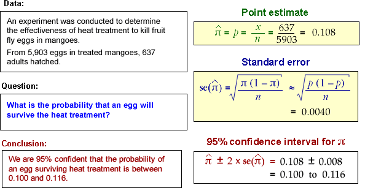

Interpretation of a confidence interval
We never know in practice whether or not the confidence interval that we obtain actually includes π.
Being right most of the time is the best one can hope for, since there is always the possibility of being misled by an unlucky sample.
The method that we use to obtain the confidence interval has probability 0.95 of including π. We cannot tell whether the single interval that we evaluate from our data set is one of these 'lucky' intervals, but knowing that the method works so often gives us 95% confidence in this interval.
Example
